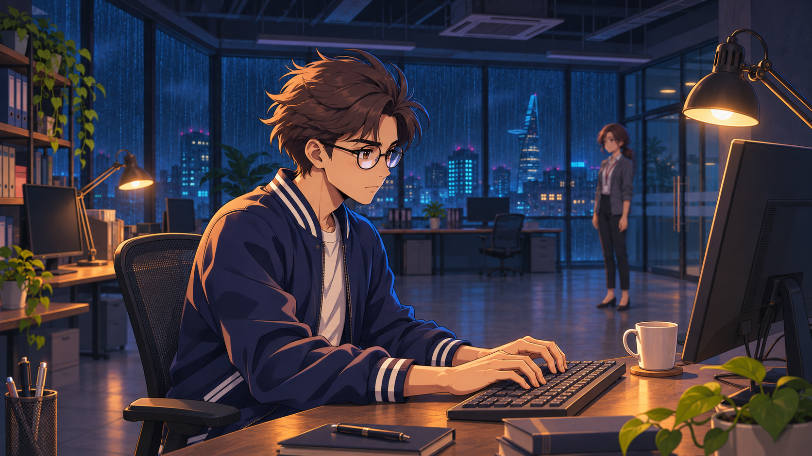
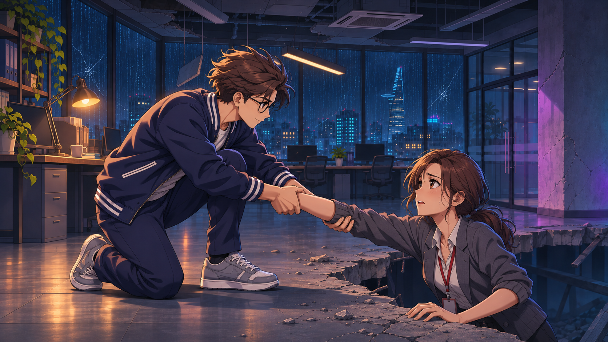
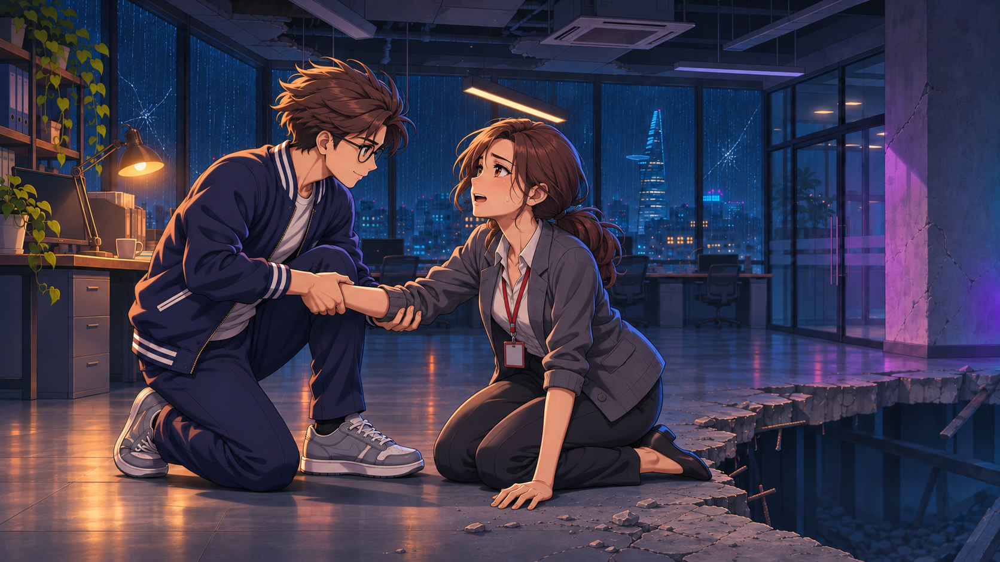
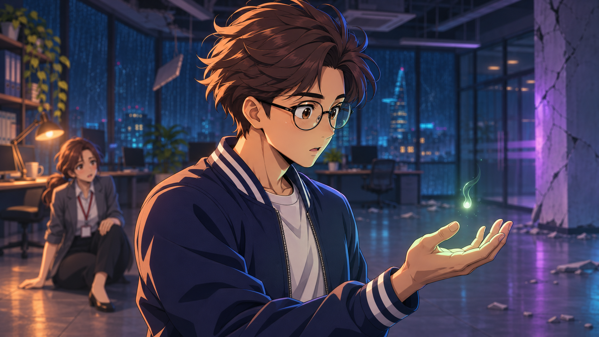

Mở https://kling.ai/app/ và vào Video Generation / Image-to-Video hoặc chế độ Frames tương ứng.
Chọn Kling 4.0 nếu tài khoản có; VIDEO 3.0 là phương án dự phòng cho start/end frames và tham chiếu nhân vật. Giữ cùng một model khi tạo các cảnh có người.
Upload 02-scene-images/S04-start.png vào Start Frame. Đây là ảnh cảnh hoàn chỉnh. Ảnh hero.png là ảnh tham chiếu, không dùng thay ảnh mở đầu cảnh này.
Nếu có Add End Frame, thêm 02-scene-images/S04-end.png. Hai ảnh dùng cùng góc máy và điểm nắm cẳng tay. Nếu chế độ bạn chọn không hỗ trợ ảnh kết thúc, chỉ dùng ảnh Start và prompt chính.
Đặt 5 giây, 16:9, ưu tiên 1080p / chất lượng cao nếu gói có. Nếu có Multi-Shot, tắt để giữ một góc máy. Khi làm nháp, có thể dùng mức chất lượng thấp hơn rồi tạo lại take chốt ở 1080p.
Mở 03-prompts/S04.txt, chép toàn bộ nội dung vào ô prompt. Mỗi file đã đủ hướng dẫn; không cần ghép thêm prompt chung.
Tạo 1 take, kiểm tra điểm nắm tay và trọng lượng cơ thể. Nếu sai, dùng S04-simple-retry.txt, giảm hành động về một lần kéo ngắn. Khi bản có End Frame bị chuyển cảnh hoặc biến hình, thử bỏ End Frame và giữ camera đứng yên.
Chỉ tiếp tục các cảnh khác sau khi bạn thấy chất lượng chuyển động chấp nhận được. Số credit phụ thuộc model, thời lượng, chất lượng và số lần thử; xem mức hiển thị trước khi Generate.
Tên nút và lựa chọn có thể thay đổi theo model/gói tài khoản. Hướng dẫn này đi theo các chức năng được mô tả trong tài liệu chính thức, không giả định mọi tài khoản đều có cùng giao diện.
Giữ nhân vật đồng nhất giữa các cảnh
Các ảnh đã được vẽ lại theo phong cách anime: giữ tóc nâu vuốt lệch, kính tròn đen, áo varsity xanh đậm viền trắng của nam chính; giữ tóc cột thấp, blazer xám và dây thẻ đỏ của đồng nghiệp. Tỷ lệ cơ thể được chuyển sang anime người trưởng thành để phù hợp diễn xuất phim.
01-references/hero.png và hero-face.png: toàn thân và cận mặt nam chính.
01-references/coworker.png và coworker-face.png: toàn thân và cận mặt đồng nghiệp.
Nếu có Element Library, tạo một element tên DiMonHero từ 2 ảnh của nam chính, và một element DiMonCoworker từ 2 ảnh đồng nghiệp. Hướng dẫn Element Library hiện mô tả tối thiểu 2 ảnh cho một multi-image element.
Nếu workflow hỗ trợ Start Frame + Element Reference, gắn đúng 2 element này vào các cảnh S02–S06. Chọn element bằng giao diện; chỉ gõ tên vào prompt sẽ không tự đính kèm tham chiếu.
Nếu không có Elements, vẫn dùng từng ảnh Start và prompt. Kiểm tra mặt, tóc, kính, áo ở từng take trước khi chọn; không đổi model tùy tiện giữa các cảnh.
Không upload sheet có nhiều người/biểu cảm làm Start Frame. Không dùng sprite hoặc từng bộ phận cơ thể để làm ảnh đầu vào cho các cảnh này.
Tạo đủ 6 clip
Mỗi cảnh sinh một clip nguồn 5 giây. Dùng ảnh Start cùng mã và prompt cùng mã. Dùng nhịp trong 04-editing/timeline.csv để cắt còn 28 giây hình phim, thêm 2 giây tên game thành 30 giây.
Kling 4.0 có thể hỗ trợ thời lượng dài hơn và nhiều keyframe. Chia clip 5 giây ở đây là lựa chọn sản xuất để dễ duyệt và tạo lại từng cảnh, không phải giới hạn thời lượng của model.
Prompt tiếng Anh đã nêu rõ ai làm gì, giữ một shot, diễn xuất không lời. Không cần thêm lời thoại hoặc yêu cầu camera quay vòng.
Nếu có ô Negative Prompt, có thể dùng 03-prompts/negative.txt. Nếu không có, bỏ qua; không bắt buộc ghép danh sách này vào prompt chính.
Nếu bật Native Audio, nối đoạn tương ứng trong 03-prompts/native-audio.txt vào cuối prompt cảnh. Yêu cầu chỉ âm thanh môi trường, không thoại và không nhạc, để dễ dựng nhạc xuyên suốt sau đó. Nếu tắt Native Audio, dùng cue sheet để bổ sung âm thanh trong phần mềm dựng.
Xuất take được chọn và đổi tên S01.mp4 … S06.mp4. Giữ bản gốc, không nén qua ứng dụng chat trước khi dựng.
Dựng thành phim 30 giây
Mở DaVinci Resolve hoặc trình dựng bạn quen; tạo timeline 1920×1080, 30 fps trước khi thả clip.
Ghép theo thứ tự S01 → S06. Lấy 4 giây của S01; 5 giây mỗi cảnh S02–S05; 4 giây của S06. Thay đổi điểm In trong clip nguồn nếu nhịp hành động tốt hơn ở đoạn khác, nhưng giữ độ dài cảnh theo bảng.
Thêm 04-editing/end-title.png ở 00:28–00:30. Không gửi logo/title card vào Kling để tạo chuyển động nhân vật. Có thể thêm fade 6–8 frame trong trình dựng.
Dùng cắt thẳng giữa các cảnh. Giữ nhịp gõ phím → rung chấn → cứu người → im ngắn ở tinh linh → cú đấm. Không phủ transition xoay hoặc zoom lên các điểm đổi cảnh.
File timeline.edl là khung dựng tham khảo 30 fps với tên clip S01.mp4…S06.mp4 và đoạn nền đen 2 giây ở cuối. Một số trình dựng cần relink clip thủ công; nếu import không khớp, dùng bảng CSV. Thay đoạn đen cuối bằng ảnh title.
dialogue-optional.srt chứa lời thoại phụ đề tùy chọn, chưa có bản lồng tiếng. Import thành subtitle track và chỉnh điểm vào/ra theo take thực tế. Có thể bỏ toàn bộ thoại để làm bản landing chỉ hình và âm thanh.
Dùng sound-cues.csv để đặt mưa, gõ phím, sàn nứt, tiếng kéo người và cú khí lực. Đặt một bài nhạc xuyên suốt thay vì để mỗi clip tự sinh một bài khác nhau. Gói này không kèm bản nhạc thu sẵn.
Xuất MP4, H.264, 1920×1080, 30 fps, khoảng 12 Mb/s; âm thanh AAC 48 kHz. Độ dài cuối đúng 30 giây. Chọn clip nguồn 1080p cho bản chốt.
Khi kết quả chưa đạt
Vấn đề
Cách thử tiếp
Camera chạy nhưng người đứng im
Giữ câu hành động nhân vật ở đầu prompt; bỏ bớt chuyển động camera; dùng lại ảnh Start.
Cứu người bị dính hoặc thừa tay
Giữ điểm nắm cẳng tay có sẵn, dùng prompt S04 đơn giản, camera khóa; không thêm ôm, xoay hoặc đổi tay.
Kính, mặt hay áo thay đổi
Kiểm tra ảnh Start; gắn đúng Element nếu có; giữ cùng model; tạo lại take sai trước khi dựng.
Hai ảnh Start/End gây chuyển cảnh
Bỏ End Frame, dùng Start + prompt; hoặc giảm mức thay đổi tư thế.
Cú đấm biến thành tay dài hoặc nhiều đòn
Chỉ giữ một cú đấm thẳng; tay dừng ở tầm với tự nhiên, luồng khí mới là phần đi tiếp.
VFX trắng xóa che mặt
Giữ yêu cầu khí trong, sợi khí mảnh và ít bụi; giảm/loại bỏ yêu cầu glow, explosion hoặc smoke.
Clip có thoại lạ
Dùng silent acting; tắt thoại/âm thanh sinh nếu chế độ cho phép, hoặc mute clip và dựng lại âm thanh.
Hai cảnh lệch màu
Chọn take có tông đèn vàng / cửa sổ xanh gần nhau rồi cân màu nhẹ ở trình dựng.
Kiểm tra trước khi chốt take
Xem video ở tốc độ thật, sau đó dừng ở các điểm tiếp xúc. Kiểm tra: nhân vật có thực sự hành động; mặt/tóc/kính giữ nhận diện; tay chân đúng và không cao su; chân trụ bám sàn; điểm nắm cẳng tay không đứt; đồng nghiệp đã ở bên an toàn; cú đấm chỉ xảy ra một lần; hiệu ứng không che nhân vật.
Nguồn hướng dẫn
Đã đối chiếu tài liệu chính thức ngày 03/11/2026. Cấu hình hiển thị trong tài khoản thực tế là căn cứ cuối cùng cho model và tính năng khả dụng.
Rain falls across the dark office tower and splashes into puddles on the empty street. Warm light remains steady in the single lit upper office window. Tree leaves sway gently in the wind. The camera makes a restrained slow push toward that lit window, keeping the building geometry stable. A faint violet flicker briefly lights the distant clouds near the end. Continuous hand-drawn 2D anime background animation, quiet suspense, one uninterrupted shot.
Duyệt take: Đường thẳng tòa nhà giữ ổn định; mưa và lá có chuyển động; cửa sổ sáng không nhảy vị trí.
S02 / 00:04–00:09
Nhân viên ở lại làm việc

Giới thiệu nhân vật qua diễn xuất nhỏ, có chuyển động thật.
The man seated on the left types naturally with both hands resting at the keyboard. His shoulders move subtly with his breathing and he blinks once. After a brief pause, he stops typing, lifts his eyes from the monitor and turns his head slightly toward the woman and the faint sound behind him. The woman in the background turns her head toward the windows. Reflections of rain move softly across the glass. The camera makes a very slow push in; the man remains seated. Preserve the supplied hand-drawn 2D anime design, adult proportions, glasses, hair silhouette and clothing colors throughout. Animate believable changing poses, natural joint movement and cloth following the body. One continuous shot. Silent character acting.
Duyệt take: Có gõ phím, dừng tay và quay đầu; kính không tan hoặc đổi gọng; camera không chỉ lướt trên ảnh tĩnh.
The ceiling light swings and small concrete fragments fall as the office begins to shake. The floor crack widens on the right. The woman on the right loses her footing and drops to one knee at the broken edge, bracing one palm on the remaining slab. The man on the left takes one quick grounded step toward her and reaches his right arm out. Both bodies respond to gravity with clear weight shifts. Keep the safe floor on the left and the opening on the right. The camera holds this wide composition with only a slight earthquake tremor. Preserve the supplied hand-drawn 2D anime design, adult proportions, glasses, hair silhouette and clothing colors throughout. Animate believable changing poses, natural joint movement and cloth following the body. One continuous shot. Silent character acting.
Duyệt take: Sàn vỡ ở bên phải; không đảo vị trí hai người; nhân vật có trọng lượng và chân chạm sàn; không cần mô tả một cú rơi dài.
S04 / 00:14–00:19
Kéo đồng nghiệp lên

Một hành động duy nhất: kéo người lên từ tư thế đã nắm chắc.
The man on the left already has a secure two-handed grip on the woman's left forearm. He tightens that existing grip, shifts his weight back through his braced right foot and pulls her upward in one sustained effort. The woman pushes her free right palm against the ledge and brings one knee onto the safe slab on the left. She ends supported on the intact floor beside him, visibly relieved. Maintain the same forearm grip until she is supported. Keep the anatomy and contact physically continuous. The camera stays locked in this same side-view composition. Preserve the supplied hand-drawn 2D anime design, adult proportions, glasses, hair silhouette and clothing colors throughout. Animate believable changing poses, natural joint movement and cloth following the body. One continuous shot. Silent character acting.
Duyệt take: Hai bàn tay không hòa làm một; điểm nắm cẳng tay liên tục; chân trụ và đầu gối có điểm tì; người nữ lên được sàn an toàn.
Xem ảnh kết thúc

S05 / 00:19–00:24
Tinh linh thức tỉnh

Cảm xúc trên khuôn mặt dẫn cảnh, ánh sáng chỉ hỗ trợ.
The tiny mint spirit hovering above the man's open palm gently circles once, trailing a few delicate translucent sparks. His open palm remains steady. His eyes follow the light; his brows gradually settle from surprise into calm determination, and his breathing becomes controlled. The spirit slowly sinks into his palm, leaving a faint mint reflection along his glasses and fingertips. The woman behind him takes a recovering breath on the safe floor. The camera slowly pushes closer to his face while keeping his eyes visible. Preserve the supplied hand-drawn 2D anime design, adult proportions, glasses, hair silhouette and clothing colors throughout. Animate believable changing poses, natural joint movement and cloth following the body. One continuous shot. Silent character acting.
Duyệt take: Có đổi ánh mắt và biểu cảm; ánh sáng không che mặt; lòng bàn tay giữ giải phẫu ổn định; tinh linh nhỏ, không biến thành khối khói trắng.
The dark claw advances out of the portal from the right. The man plants his rear sneaker, rotates his hips and shoulder, then delivers exactly one decisive right straight punch toward the claw. His arm extends only to its natural reach. A compact transparent air-pressure crescent bursts forward from his fist and continues beyond his hand, driving the claw back toward the portal. Fine wind filaments and a little floor dust reveal the force while his body and face remain readable. The woman stays safely behind him on the left. He finishes in a grounded protective stance. Keep the camera in this side-view composition, with a short restrained impact tremor at the strike. Preserve the supplied hand-drawn 2D anime design, adult proportions, glasses, hair silhouette and clothing colors throughout. Animate believable changing poses, natural joint movement and cloth following the body. One continuous shot. Silent character acting.
Duyệt take: Chỉ một cú đấm; cánh tay không kéo dài thành đòn đánh; khí lực đi tiếp từ nắm đấm; không có mây trắng che người; đồng nghiệp đứng sau đường đánh.